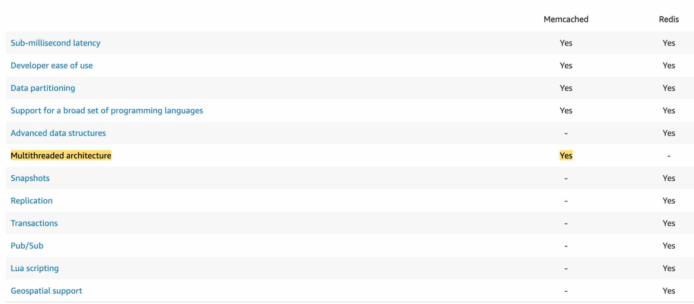

- https://aws.amazon.com/caching/implementationconsiderations/¶
ElastiCache¶
- key-value
- if data changing slowly, then have it. eg:
key-valuecachingaggregations-resultscaching- ...
- AWS offering :
Redis,MemCacheMemoryDBhas Redis like api.- advantages:
- sub ms latency.
- negative side
- need application code changes.
- Data may be out of date, eventually consistent.
-
not suited for un-structured data.
-
usecase: to significantly improve latency and throughput for:

- read-heavy application workloads
- (such as social networking, gaming, media sharing, leaderboard, and Q&A portals)
- compute-intensive workloads
A cache use-cases¶
Database Read¶
- prg <--- DB (state)
- prg (
codechanges to use cache ) <---Cache<--- DB(Data) : for stateless Applicationlow latencyhigh performancereduce loadoff of databases for read intensive workloads
- lazy loading(stale read) and write-through(sync cache with DB)
Maintain user Session¶

B Type¶
1 Redis¶
- think of RDS, similar

- supports advance data structure.
- internal:
- uses
Sets(uniqness) andSortedSets(uniqueness + ordering) cluster>shard(node group) >node(cache)- One primary Node (choose: ec2 intance type)
- select upto 5 Read Replicas to scale reads and have high availability
- Read replica-1 --> az-1
- Read replica-2 --> az-2, etc
- ...
-
enable/disable:
Multi AZwith Auto-Failover, more cost.- stand-by replica-1 --> az-1
- stand-by replica-2 --> az-2, etc
-
use case
millions of requests / secondfor real-time applications- in Gaming, Ad-Tech, Financial Services, Healthcare, and IoT.
- popular choice for :
- caching,
- session management,
- gaming, leaderboards,
- real-time analytics,
- geospatial,
- purpose-built commands for working with real-time geospatial data at scale.
- operations like finding the distance between two elements (for example people or places)
- GEOADD, GEORADIUS, GEODIST
- chat/messaging,
- media streaming,
- and pub/sub apps.
Redis::Demo¶
- Create REDIS (.rdb file)
- Choose : Design youe own cache
- method : Easy, cluster cache ** , restore(from .rdb)
- cluster name, password, port
- maintenece window
- security : encryption (rest /fly)
- enable logs
- tags
- VPC/subnet
- redis Engine : vesrion, ec2 instance type, count of Read replica
=== READY ===
- primary end point
- reader end point
- backup/restore
¶
- Create REDIS (.rdb file)
- Choose : Design youe own cache
- method : Easy, cluster cache ** , restore(from .rdb)
- cluster name, password, port
- maintenece window
- security : encryption (rest /fly)
- enable logs
- tags
- VPC/subnet
- redis Engine : vesrion, ec2 instance type, count of Read replica
=== READY ===
- primary end point
- reader end point
- backup/restore
2 MemCache¶
- No high availability (replication)
Non persistent- No backup/restore
- Security:
SASL(more advance) - Multi-threaded architecture ?
- Multi-node for partitioning of data (sharding) ?
- Memcached does NOT offer support for geospatial data.

Comparison¶

3 Memory DB for redis : intro¶
 - Ultra-fast performance with over
- Ultra-fast performance with over 160 millions requests/second
- Durable in-memory data storage
- with Multi-AZ, hundreds of nodes
- Scale seamlessly from 10s GBs >>> 100s TBs of storage
- Use cases:
- web and mobile apps,
- online gaming,
- media streaming,
- …
C strategies ( caching design pattern )¶
1. Lazy Loading or Population / Cache-Aside¶
 - flow for understanding:
- hit-1: read from cache : found ok
- not found, hit-2: read from db
- hit-3: set cache
- next:
-
- flow for understanding:
- hit-1: read from cache : found ok
- not found, hit-2: read from db
- hit-3: set cache
- next:
- case:1 Data update on some other api
- cache will become stale / inconsistent.
- this is drawback.
- write-through strategy solves it. next
- case:2 new data-1 wrote on DB, by some other api
- read data-1 from cache will miss
- since cache was updated after write.
- write-through strategy solves it. next
- sample psuedo code for understanding:

2. write-through¶
 - each write on DB, requires 2 hit:
- hit-1: write on DB
- hit-2: write on cache
- pseudo code:
-
- each write on DB, requires 2 hit:
- hit-1: write on DB
- hit-2: write on cache
- pseudo code:
-  - drawback:
- cache churn: writing lot n lot of data in cache, which will be never read.
- cache-eviction and TTL resolves it. next
- drawback:
- cache churn: writing lot n lot of data in cache, which will be never read.
- cache-eviction and TTL resolves it. next
3. cache-eviction¶
- set eviction policy by
- LRU (least recently used)
- TTL (sec, min, hr, days)